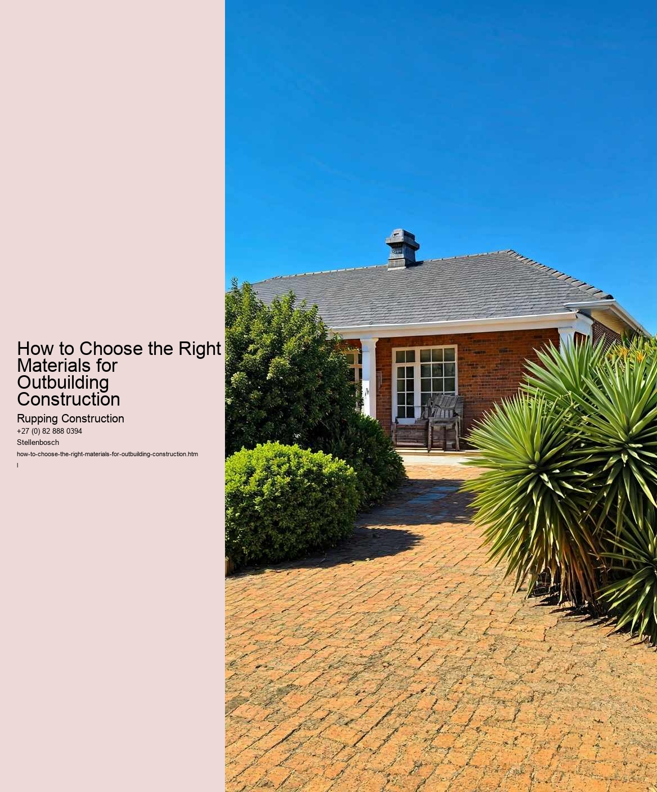

When embarking on the journey of outbuilding construction, one of the most critical factors to consider is the local climate. Understanding local climate considerations is essential not only for ensuring the longevity and durability of the structure but also for enhancing its functionality and comfort. The materials chosen for construction can greatly influence how well an outbuilding performs in varying weather conditions.
Firstly, it is important to recognize the unique climate characteristics of the area where the outbuilding will be built. For instance, regions with high humidity may require materials that resist mold and rot, such as treated wood or composite materials. Conversely, areas prone to extreme heat might benefit from reflective roofing materials and insulated walls to maintain a stable internal temperature. Understanding these nuances allows builders to select materials that will withstand the local conditions and reduce the need for frequent repairs or replacements.
Another crucial aspect is the seasonal variation in weather patterns. In regions that experience harsh winters, materials with good insulation properties become paramount. Insulated panels, for example, can help keep the interior warm and reduce energy costs. On the other hand, in areas with heavy rainfall or snowfall, waterproof and weather-resistant materials should be prioritized to prevent water infiltration and structural damage.
Additionally, local climate considerations can also influence the choice of materials in terms of sustainability. For instance, using locally sourced materials not only reduces transportation emissions but also ensures that the materials are well-suited to the local environment. This can enhance the buildings overall performance and integrate it more harmoniously into the surrounding landscape.
Furthermore, the aesthetic qualities of materials should not be overlooked. The local climate can affect the natural aging process of materials, which can impact the visual appeal of the outbuilding over time. Understanding how materials will react to local weather-whether they will fade, warp, or develop a patina-can help in selecting options that maintain their beauty and functionality.
In conclusion, understanding local climate considerations is vital when choosing the right materials for outbuilding construction. By taking into account factors such as humidity, temperature fluctuations, seasonal weather patterns, and local sourcing, builders can make informed decisions that enhance the durability, functionality, and aesthetic of their structures. This thoughtful approach not only leads to a more successful building project but also contributes to a more sustainable and resilient environment.
When it comes to constructing an outbuilding, one of the most critical aspects to consider is the choice of materials. The durability of these materials and the maintenance they require can significantly impact the longevity and functionality of the structure. Evaluating material durability and maintenance needs is essential for ensuring that your outbuilding serves its intended purpose while minimizing long-term costs and effort.
Durability refers to how well a material can withstand the elements and the wear and tear of everyday use. Factors such as weather conditions, exposure to moisture, and potential pest infestations play a crucial role in determining a materials longevity. For instance, wood is a popular choice for outbuildings due to its aesthetic appeal and versatility. However, untreated wood can be susceptible to rot and insect damage, necessitating regular maintenance and treatment with preservatives. On the other hand, engineered materials like fiber-cement or metal can offer greater durability and resistance to environmental challenges, though they may come with a higher upfront cost.
In addition to durability, its essential to consider the maintenance requirements of the materials you choose. Some materials demand regular upkeep, such as painting, sealing, or staining, to maintain their appearance and functionality. For instance, while wooden siding may look beautiful initially, it often requires periodic maintenance to prevent deterioration over time. Conversely, materials like vinyl or metal siding typically require less maintenance, making them an attractive option for those looking to minimize ongoing work.
Cost is another crucial factor when evaluating material durability and maintenance. While high-durability materials may have a higher initial investment, they can save money in the long run by reducing the need for repairs and replacements. Its essential to weigh the upfront costs against potential long-term savings when making your choice. Additionally, consider the availability of materials and local climate conditions, as these can influence both durability and maintenance needs.
Ultimately, the right choice of materials for your outbuilding construction hinges on a careful evaluation of durability and maintenance. By selecting materials that can withstand the test of time and require minimal upkeep, you can create a structure that not only meets your immediate needs but also stands strong for years to come. Taking the time to research and consider your options will lead to a more satisfying and cost-effective building experience.
When embarking on a construction project, particularly for outbuildings such as sheds, garages, or workshops, one of the most critical decisions revolves around the choice of materials. The selection not only impacts the overall aesthetics and functionality of the structure but also plays a significant role in the project's budget. Conducting a thorough cost analysis of various construction materials can help ensure that you make informed choices that align with your needs, preferences, and financial constraints.
First and foremost, it is essential to identify the primary materials typically used in outbuilding construction. Common options include wood, metal, concrete, and composite materials. Each of these choices has its own set of advantages and disadvantages, which can significantly affect both initial costs and long-term value. For instance, wood is often favored for its natural appearance and ease of construction, but it may require ongoing maintenance to prevent rot and pest issues. On the other hand, metal is known for its durability and low maintenance needs, but it can be more expensive upfront, especially if high-quality materials are chosen.
Next, when performing a cost analysis, it is crucial to consider not only the purchase price of these materials but also other associated costs. For example, wood may be less expensive initially, but if it requires extensive treatment or finishes, those costs should be factored in. Similarly, metal structures might need insulation to manage temperature fluctuations, adding to the overall expenditure. Concrete is often viewed as a long-term investment due to its longevity and strength, but the costs related to pouring, curing, and finishing can quickly escalate.
Another key aspect of cost analysis is evaluating the local market conditions and availability of materials. Prices can vary widely based on geographic location, seasonal demand, and even economic fluctuations. Sourcing materials locally can reduce transportation costs and support community businesses, but it is essential to ensure that the quality meets your project requirements. Additionally, looking into sustainable options, such as reclaimed wood or recycled metal, can offer both environmental benefits and potential cost savings.
Finally, beyond the financial implications, it is crucial to consider the practical aspects of material selection. Factors such as climate, intended use of the outbuilding, and personal preferences should guide your decision-making process. For instance, if you live in an area prone to heavy rains or snow, choosing a material that can withstand harsh weather conditions will save you money in repairs and replacements in the long run.
In conclusion, a comprehensive cost analysis of various construction materials is a vital step in choosing the right materials for outbuilding construction. By carefully weighing the initial costs against long-term benefits, considering local market dynamics, and evaluating practical needs, you can make a well-informed decision that balances both your budget and your vision for the project. Ultimately, the right materials will not only enhance the functionality and durability of your outbuilding but also provide satisfaction and peace of mind for years to come.
When embarking on the journey of constructing an outbuilding, one of the most significant decisions you will face is the choice of materials. With growing awareness about environmental issues, many people are now prioritizing sustainability in their building projects. Sustainable material options not only reduce the ecological footprint of your outbuilding but can also enhance its durability and aesthetic appeal. Here, we will explore some of the best sustainable material options available for eco-friendly outbuildings.
First and foremost, consider using reclaimed wood. This material is sourced from old buildings, barns, or furniture, giving it a second life while reducing the demand for new lumber. Reclaimed wood adds character and warmth to any structure, and its unique history can bring a story to your outbuilding. Moreover, using reclaimed wood helps combat deforestation and minimizes waste in landfills, making it an excellent choice for environmentally conscious builders.
Another notable option is bamboo, a highly renewable resource. Bamboo grows rapidly and can be harvested without killing the plant, making it an exceptionally sustainable choice. Its strength and versatility allow it to be used in various applications, from structural beams to flooring. Additionally, bamboo has a natural resistance to pests and moisture, which can be advantageous in outbuilding construction.
For those looking to incorporate insulation, recycled denim or cellulose made from recycled paper are excellent options. Cellulose insulation is not only effective in regulating temperature but is also one of the most sustainable insulation materials available. It has a lower carbon footprint compared to traditional options and is often treated with non-toxic fire retardants. Similarly, recycled denim insulation provides excellent thermal and acoustic performance, allowing for a comfortable and quiet environment within your outbuilding.
In terms of roofing, consider using metal or green roofs. Metal roofing, particularly when made from recycled materials, can last a lifetime, reducing the need for replacements and minimizing waste. It also reflects heat, which can help keep the outbuilding cooler in the summer. Alternatively, green roofs, which incorporate living vegetation, provide natural insulation, reduce stormwater runoff, and promote biodiversity, making them a beautiful and functional choice for eco-friendly structures.
Finally, when it comes to finishes and paints, opt for low-VOC (volatile organic compounds) or natural paints. These products minimize harmful emissions, contributing to better indoor air quality. Natural paints, often made from plant-based ingredients, are not only safer for the environment but can also provide a unique aesthetic that synthetic paints cannot replicate.
In conclusion, the materials you choose for your outbuilding can significantly impact both the environment and the overall quality of the structure. By opting for sustainable materials such as reclaimed wood, bamboo, recycled insulation, metal roofing, and eco-friendly paints, you can create a beautiful, functional space that aligns with your values. As you plan your outbuilding, remember that every choice contributes to a more sustainable future, proving that eco-friendly construction can be both responsible and rewarding.
Checklist for Compliance in Outbuilding Construction Projects